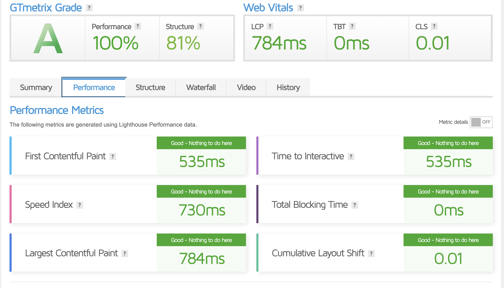
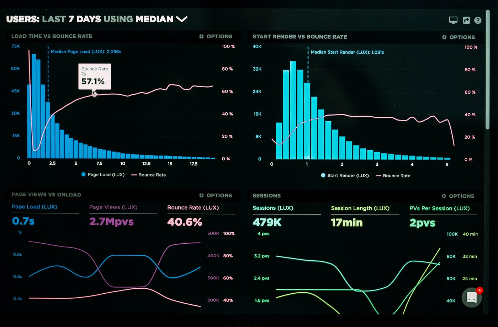
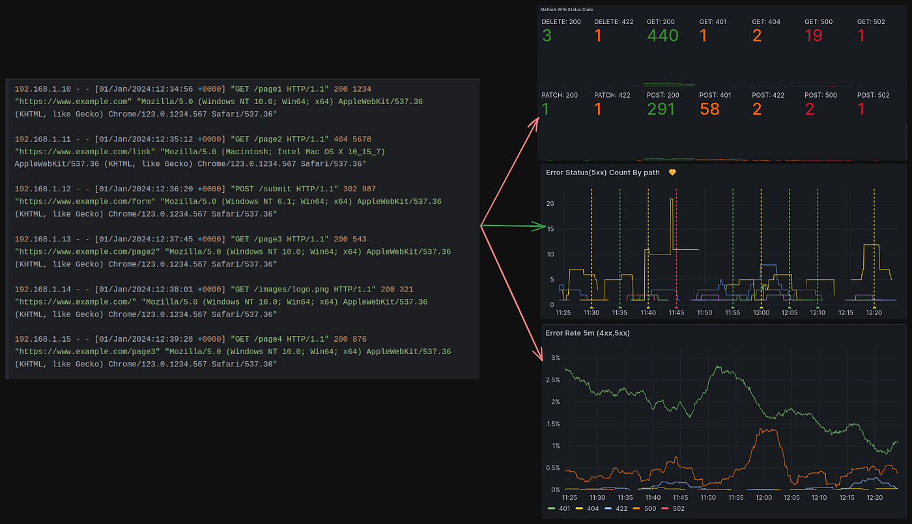
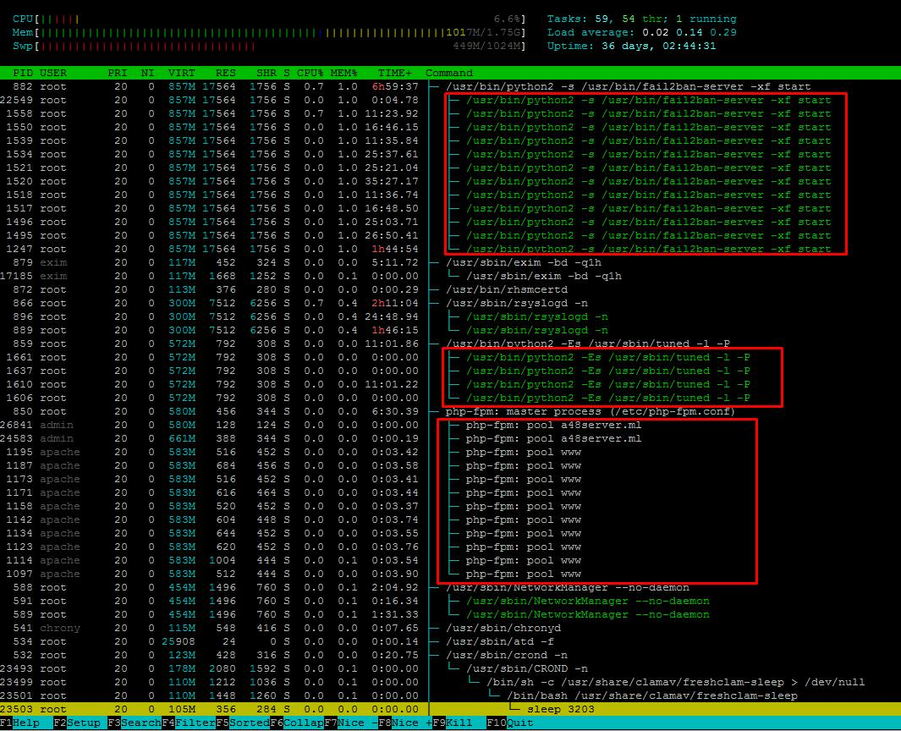

Achieving 40% performance improvement across a high-load multi-website production environment
Implemented by Mominul Hoque, DevOps & Infrastructure Optimization Specialist
Modern businesses rely heavily on fast, stable, and scalable web infrastructure. Performance issues not only affect user experience but also directly impact search engine rankings, customer retention, and revenue generation.
This case study presents a real-world optimization project where a production server hosting more than 50 active websites was successfully optimized without downtime. The goal was to improve speed, stability, and scalability using a structured DevOps approach.
By combining system-level tuning, application optimization, and advanced caching strategies, the server achieved a measurable 40% performance improvement along with enhanced reliability and efficiency.
The server experienced slow load times, high CPU usage, and inconsistent performance during peak traffic. Average response times ranged between 2–4 seconds, which negatively impacted user experience and SEO performance.
Monitoring revealed inefficient database queries, lack of caching, and unoptimized server configurations, creating performance bottlenecks across multiple websites.
Worker processes and connections were tuned based on CPU cores. Gzip compression and static file caching were enabled to improve delivery speed.
FastCGI caching was configured to reduce backend load. Browser caching improved repeat visit performance.
Slow queries were optimized using indexing and MariaDB tuning, improving database response times significantly.
Process limits and execution settings were optimized to handle concurrent traffic efficiently.
Unused services were removed and kernel tuning improved overall system responsiveness.


Left: Before Optimization | Right: After Optimization
Performance verified using GTmetrix and real server monitoring data.


CPU usage reduced significantly after optimization
Monitoring confirmed lower CPU usage, better load handling, and stable performance during peak traffic.
The optimization improved user engagement and reduced infrastructure strain without requiring hardware upgrades. The system is now scalable and ready for future growth.
Nginx • MariaDB • PHP-FPM • Ubuntu • FastCGI Cache • Performance Tuning
I help businesses improve server speed, stability, and scalability.
Get a Free ConsultationMominul Hoque — DevOps & Infrastructure Specialist